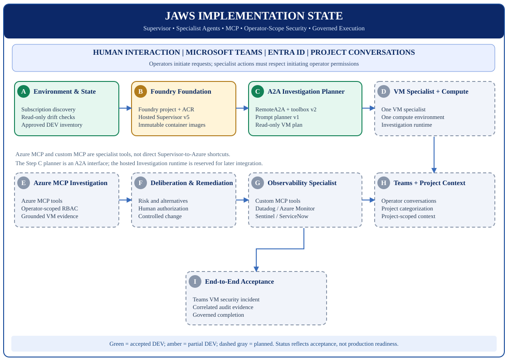
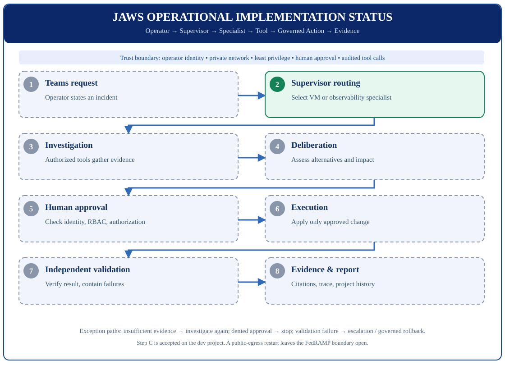

Current accepted baseline
Installer 0.4.10 can discover an empty subscription and can provision a Step B foundation after preflight. Those commands are not accepted: no fresh-subscription receipt has been archived. Step C is closed only in the development project: Supervisor v5 delegates through the Foundry RemoteA2A toolbox to prompt planner v1. The hosted Investigation container was not invoked by that accepted call. The same installer can read a Step B receipt with -EnvironmentName. A live Step C acceptance on a fresh subscription has not been recorded.
System architecture: implementation copy
Open full-size status SVG · View approved reference architecture



Concept of Operations: implementation copy
Open full-size operational status SVG · View end-state ConOps



Milestone tracker
| Step | Milestone | Status | Acceptance scope | Code trace |
|---|---|---|---|---|
| A | Discovery and reconciliation | accepted | Read-only inventory and state comparison | installer/Install-Jaws.ps1 |
| B | Foundry foundation and packaging | partial | Existing DEV Foundry and immutable hosted images | installer/Deploy-JawsSupervisor.ps1 |
| C | A2A Investigation Planner | accepted | Supervisor v5 → prompt planner v1; completed task | installer/Install-JawsThroughStepC.ps1 |
| D | VM specialist + compute | partial | Catalog installer exists; fresh-subscription receipt not recorded | installer/Install-JawsStepD.ps1 |
| E | Azure MCP investigation | planned | Allow-listed read-only Azure MCP evidence | Pending |
| F | Deliberation & remediation | planned | Deliberation skill and approval workflow | Pending |
| G | Observability specialist | planned | Extensible custom MCP server on shared compute | Pending |
| H | Teams projects & conversations | planned | Conversation thread and shared project record | Pending |
| I | End-to-end acceptance | planned | Incident lifecycle with audit evidence | Pending |
For each step's achieved value, documented sources, acceptance checks, and evidence, see References & Acceptance.
Evidence and update policy
Merged Step C PR #1 · Step C closure record · Step C runbook.
Live acceptance receipts are in installer/.local/, ignored by Git; do not publish credentials, personal identifiers or tenant-sensitive logs. Change status only with reviewed evidence and acceptance tests.